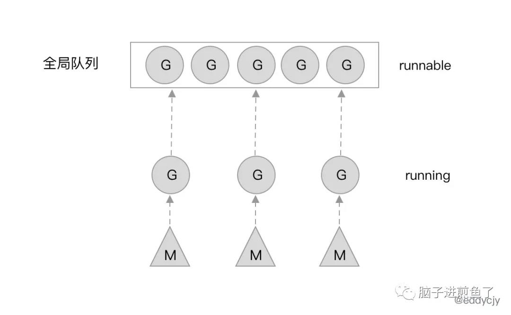
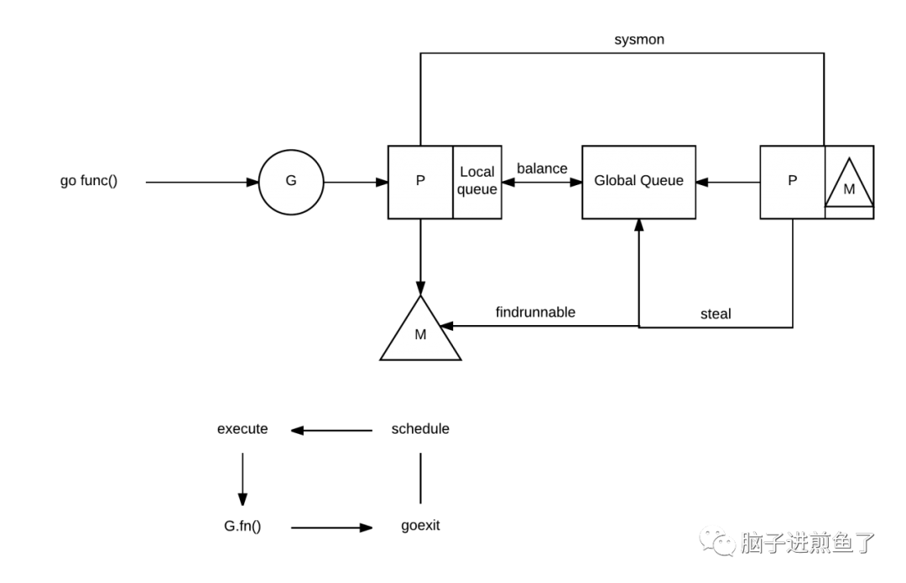

最近金三银四，是面试的季节。在我的 Go 读者交流群里出现了许多小伙伴在讨论自己面试过程中所遇到的一些 Go 面试题。
今天的主角，是 Go 面试的万能题 GMP 模型的延伸题（疑问），那就是 ”GMP 模型，为什么要有 P？“
进一步推敲问题的背后，其实这个面试题本质是想问：”GMP 模型，为什么不是 G 和 M 直接绑定就完了，还要搞多一个 P 出来，那么麻烦，为的是什么，是要解决什么问题吗？“
这篇文章煎鱼就带你一同探索，GM、GMP 模型的变迁是因为什么原因。
GM 模型
在 Go1.1 之前 Go 的调度模型其实就是 GM 模型，也就是没有 P。
今天带大家一起回顾过去的设计。
解密 Go1.0 源码
我们了解一个东西的办法之一就是看源码，和煎鱼一起看看 Go1.0.1 的调度器源码的核心关键步骤：
1 | static void |
- 调用
schedlock方法来获取全局锁。 - 获取全局锁成功后，将当前 Goroutine 状态从 Running（正在被调度） 状态修改为 Runnable（可以被调度）状态。
- 调用
gput方法来保存当前 Goroutine 的运行状态等信息，以便于后续的使用。 - 调用
nextgandunlock方法来寻找下一个可运行 Goroutine，并且释放全局锁给其他调度使用。 - 获取到下一个待运行的 Goroutine 后，将其运行状态修改为 Running。
- 调用
runtime·gogo方法，将刚刚所获取到的下一个待执行的 Goroutine 运行起来，进入下一轮调度。
思考 GM 模型
通过对 Go1.0.1 的调度器源码剖析，我们可以发现一个比较有趣的点。那就是调度器本身（schedule 方法），在正常流程下，是不会返回的，也就是不会结束主流程。

G-M模型简图他会不断地运行调度流程，GoroutineA 完成了，就开始寻找 GoroutineB，寻找到 B 了，就把已经完成的 A 的调度权交给 B，让 GoroutineB 开始被调度，也就是运行。
当然了，也有被正在阻塞（Blocked）的 G。假设 G 正在做一些系统、网络调用，那么就会导致 G 停滞。这时候 M（系统线程）就会被会重新放内核队列中，等待新的一轮唤醒。
GM 模型的缺点
这么表面的看起来，GM 模型似乎牢不可破，毫无缺陷。但为什么要改呢？
在 2012 年时 Dmitry Vyukov 发表了文章《Scalable Go Scheduler Design Doc》，目前也依然是各大研究 Go 调度器文章的主要对象，其在文章内讲述了整体的原因和考虑，下述内容将引用该文章。
当前（代指 Go1.0 的 GM 模型）的 Goroutine 调度器限制了用 Go 编写的并发程序的可扩展性，尤其是高吞吐量服务器和并行计算程序。
实现有如下的问题：
存在单一的全局 mutex（Sched.Lock）和集中状态管理：
- mutex 需要保护所有与 goroutine 相关的操作（创建、完成、重排等），导致锁竞争严重。
Goroutine 传递的问题：
- goroutine（G）交接（G.nextg）：工作者线程（M’s）之间会经常交接可运行的 goroutine。
- 上述可能会导致延迟增加和额外的开销。每个 M 必须能够执行任何可运行的 G，特别是刚刚创建 G 的 M。
每个 M 都需要做内存缓存（M.mcache）：
- 会导致资源消耗过大（每个 mcache 可以吸纳到 2M 的内存缓存和其他缓存），数据局部性差。
频繁的线程阻塞/解阻塞：
- 在存在 syscalls 的情况下，线程经常被阻塞和解阻塞。这增加了很多额外的性能开销。
GMP 模型
为了解决 GM 模型的以上诸多问题，在 Go1.1 时，Dmitry Vyukov 在 GM 模型的基础上，新增了一个 P（Processor）组件。并且实现了 Work Stealing 算法来解决一些新产生的问题。

带来什么改变
加了 P 之后会带来什么改变呢？我们再更显式的讲一下。
- 每个 P 有自己的本地队列，大幅度的减轻了对全局队列的直接依赖，所带来的效果就是锁竞争的减少。而 GM 模型的性能开销大头就是锁竞争。
- 每个 P 相对的平衡上，在 GMP 模型中也实现了 Work Stealing 算法，如果 P 的本地队列为空，则会从全局队列或其他 P 的本地队列中窃取可运行的 G 来运行，减少空转，提高了资源利用率。
为什么要有 P
这时候就有小伙伴会疑惑了，如果是想实现本地队列、Work Stealing 算法，那为什么不直接在 M 上加呢，M 也照样可以实现类似的功能。
为什么又再加多一个 P 组件？
结合 M（系统线程） 的定位来看，若这么做，有以下问题。
- 一般来讲，M 的数量都会多于 P。像在 Go 中，M 的数量最大限制是 10000，P 的默认数量的 CPU 核数。另外由于 M 的属性，也就是如果存在系统阻塞调用，阻塞了 M，又不够用的情况下，M 会不断增加。
- M 不断增加的话，如果本地队列挂载在 M 上，那就意味着本地队列也会随之增加。这显然是不合理的，因为本地队列的管理会变得复杂，且 Work Stealing 性能会大幅度下降。
- M 被系统调用阻塞后，我们是期望把他既有未执行的任务分配给其他继续运行的，而不是一阻塞就导致全部停止。
因此使用 M 是不合理的，那么引入新的组件 P，把本地队列关联到 P 上，就能很好的解决这个问题。
总结
今天这篇文章结合了整个 Go 语言调度器的一些历史情况、原因分析以及解决方案说明。
”GMP 模型，为什么要有 P“ 这个问题就像是一道系统设计了解，因为现在很多人为了应对面试，会硬背 GMP 模型，或者是泡面式过了一遍。而理解其中真正背后的原因，才是我们要去学的要去理解。
知其然知其所以然，才可破局。